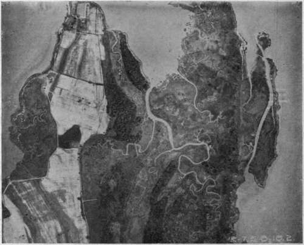
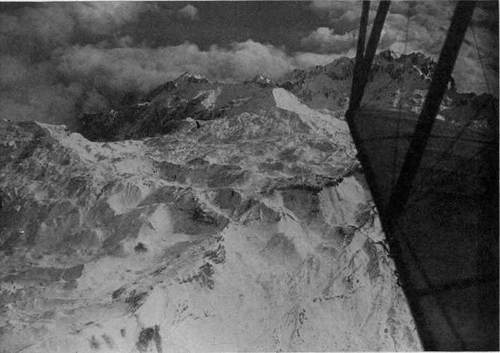
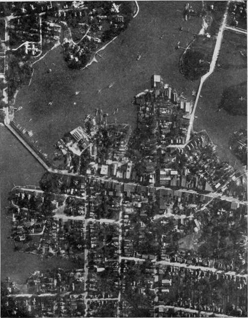
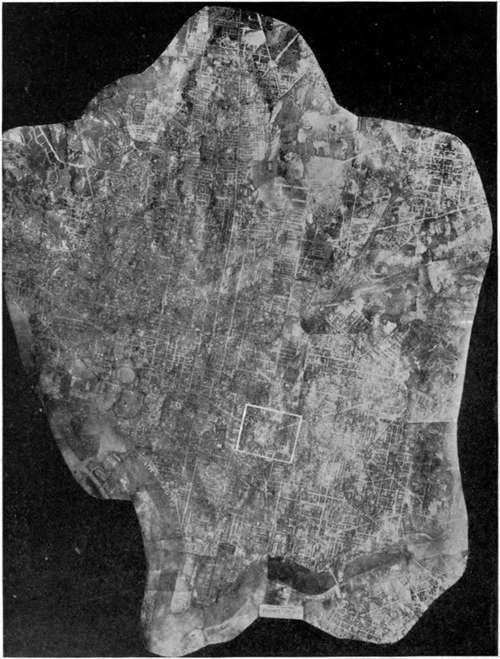
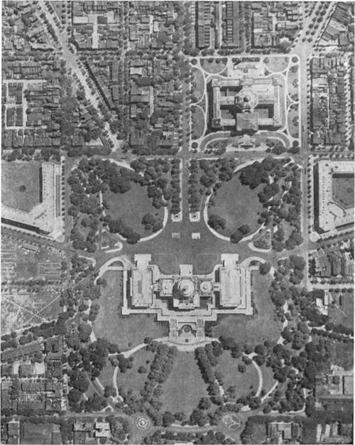
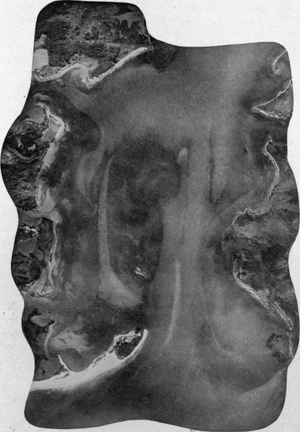
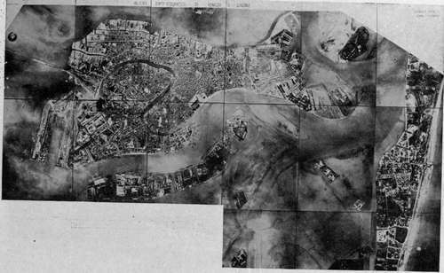
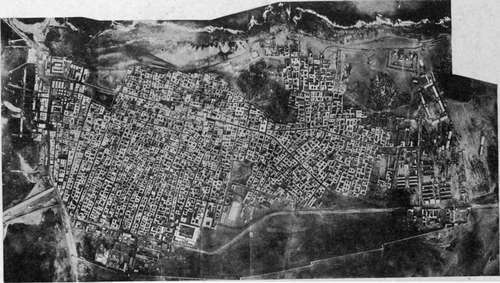
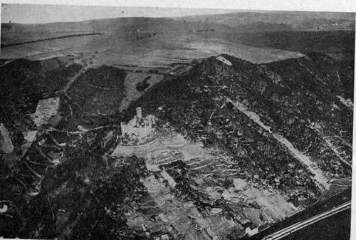

Chapter XXXIII. Exploration And Mapping
Description
This section is from the book "Airplane Photography", by Herbert E. Ives. Also available from Amazon: Airplane photography.
Chapter XXXIII. Exploration And Mapping
Aerial photographic mapping in war-time has been almost entirely confined to inserting new details in old maps. For such work some distortion or a lack of complete information on altitude and directions is not a serious matter, because the known permanent outlines serve as a basis. Furthermore, in so far as outline maps are concerned, as distinguished from pictorial maps, these have been drawn on the ordinary scales, and with the ordinary conventions of engineering map practice.
Aerial photography may be used in the future in practically the same way, as an aid to the quick recording of those minute details which would ordinarily consume an enormous amount of labor to survey directly. The region shown in Fig. 200 affords a good illustration. A discouraging amount of time and effort would be required to map this section of Virginia by the usual methods, while the smallest curve of creek and shore is instantly and completely recorded on a single photographic plate. But there are other possibilities, diverging from this application both toward greater and lesser requirements for precision.
Pictorial maps, in which the actual photographs figure, promise to be an essential part of the airman's equipment, whether he be pilot or passenger, mail carrier or sportsman. Without any pretention to detailed accuracy of location, these maps will show, in strip or mosaic form, the general appearance of the country to be traversed, with particular reference to good landing fields and other points of interest to the aviator. Vertical pictorial maps may be supplemented by obliques giving the view ahead, whereby the pilot may direct his ship. Thus the Washington monument as seen by the pilot from Baltimore is a truer guide than is the country beneath him. The crossing of mountain ranges is another case where the oblique picture will be more useful than the vertical (Fig. 201).
Fig. 200. - An aerial photographic survey of ground difficult to cover by ordinary surveying methods.
Contrasted with the merely pictorial maps will be precision surveys. Whether it will prove practical to make these entirely from the air is still an open question. It is to be assumed that cameras can be constructed with lenses having negligible distortion of field, with between-the-lens shutters to obviate the distortions due to the focal-plane type, with auxiliary devices for indicating compass direction, altitude, and inclination, or with gyroscopic mounting so that an inclination indicator is unnecessary. The application of aerial photography to precision mapping will depend upon the perfection which such cameras attain, as estimated by the permissible errors in this form of mapping. Entire dependence on photography, as in uncharted regions, is likely to be worked up to slowly, beginning with a stage of rather complete triangulation of natural or artificial points—say three in each constituent picture—then through several stages each successively employing fewer and fewer well determined points. The photographic mapping of some of our Western States will be greatly facilitated by the 100-yard squares into which the land is divided and already marked in a manner which shows clearly in aerial photographs.
Fig. 201. - Seeking out mountain passes.
A theoretical possibility is the plotting of contours from stereo-aerial pictures. Given two elements of a stereoscopic pair, taken from points whose separation is known, the position of any point in space shown in the stereoscopic view can be determined by the use of the stereocomparator. This is an instrument already employed in mountain photo-surveying, which consists essentially of a compound stereoscope in whose eye-pieces are two points movable at will so that the relief image formed by their fusion can be made to coincide with any chosen part of the landscape. The chief difficulty in the application of this idea to aerial work is to fix the base line. This problem may be met in some cases by using stereo obliques, and getting the base line by simultaneously made vertical photographs of well surveyed territory beneath. Possibly also methods can be developed by which photographs from two or more known altitudes may furnish the requisite data.
City mapping is a field for which aerial photography is peculiarly fitted (Fig. 202). A complete map of a large city is a labor of years. In fact, a modern city is always dangerously near to growing faster than its maps. An aerial map, on the contrary, can be produced in a few hours. Paris was mapped with 800 plates in less than a day's actual flying. Washington was completely mapped in hours, with less than 200 exposures. The entire map is shown, on a greatly reduced scale, in Fig. 203, while Fig. 204 shows a small portion of it in full size, from which can be obtained an idea of the dimensions of the original. These maps, while not accurate enough for the recording of deeds and mortgages, yet serve the majority of needs. There is indeed no reason why with long focus cameras, given several accurately marked points, the photographic map of a piece of real estate should not be made with all the accuracy needed, still leaving the whole process of partial surveying helped out by photography an enormously simpler one than the usual method.
Fig. 202. - Business section of Hampton, Virginia. A survey made by a single instantaneous exposure.
Fig. 203. - Mosaic map of the City of Washington. White rectangle shows portion included in next figure.
Fig. 204. - Portion of Washington mosaic, full size.
Rougher types of surveying, in open country, offer a most promising opportunity. Railway surveys, showing the character of the country: passes through mountain ranges: the available timber and other materials of construction. Canalroutes, with the available sourcesof water supply, and the best choice of course to avoid deep cuttings and aqueducts. Irrigation projects, with the natural lakes, river courses and valleys, which may be dammed to form storage basins. Coast, river and harbor surveys are possible by aerial means with a promptness and frequency which should entirely revolutionize the making of maps of waterways. Shifts in channels and shallows, even of considerable depth, stand out prominently in the aerial photograph. The actual bottom, if not more than three or four meters down—as in a bathing beach—shows in the aerial photograph (Fig. 193), while the varying surface tints caused by light reflected from the bottom at far greater depths are readily differentiated by the camera from the air. An instantaneous photograph will thus perform the work now done by a week's soundings. Fig. 205, taken near Langley Field, shows how the aerial photograph may be used to chart natural channels, while Fig. 206 shows the dredged channels of the port of Venice. Navigation of such a river as the Mississippi with its shifting bars may come to be guided by monthly or even weekly aerial photo maps.
Fig. 205. - Shallows and channels revealed by the aerial photograph.
Fig. 206. - Venice from the air, showing dredged channels.
Italian official photograph.
Fig. 207. -Bengasi, a North African town, surveyed for the first time from the air.
Italian official photograph.
Fig. 208. - Thurnberg on the Rhine.
Among other uses for aerial photography will be the location of timber. As one illustration, may be taken the discovery of mahogany trees. Their foliage at certain times of the year is of characteristic color. This may be recorded on color sensitive plates with a scientifically chosen filter, and the cutting expedition sent out with the photograph as a guide. In this as in. other cases where rough or unexplored country is to be covered, it is a question whether the airplane will after all be the most feasible craft, on account of its necessarily rapid rate of travel, and its need for known landing fields. The dirigible of large cruising radius, which can seek its landing field at leisure, is probably indicated for this kind of work. It may indeed, as already hinted, prove to be the chief photographic aircraft of the future.
Archaeological surveys offer a fascinating opportunity for airplane or dirigible balloon photography to render scientific service. Buried in desert sands or overgrown with tropical vegetation the ancient cities of Asia Minor, of Burma, and of Yucatan evade discovery, and even when found remain unmapped for decades. Discovery and map-ing can now go hand-in-hand. The topography of barbaric or colonial towns and villages, whose importance could not warrant elaborate surveys, but which should nevertheless be a matter of record, will be quickly and easily plotted by photography (Fig. 207). To this day who knows how the streets run in Timbuktu, and how, save from the air, can we ever map the teeming cities of China? He who would follow in the footsteps of Haroun-al-Raschid can even now ex-plore the by-ways of Bagdad by the aid of the Royal Air Force photographic map!
Continue to:
Tags
camera, lens, airplane, aerial, film, exposure, photography, maps, birdseye